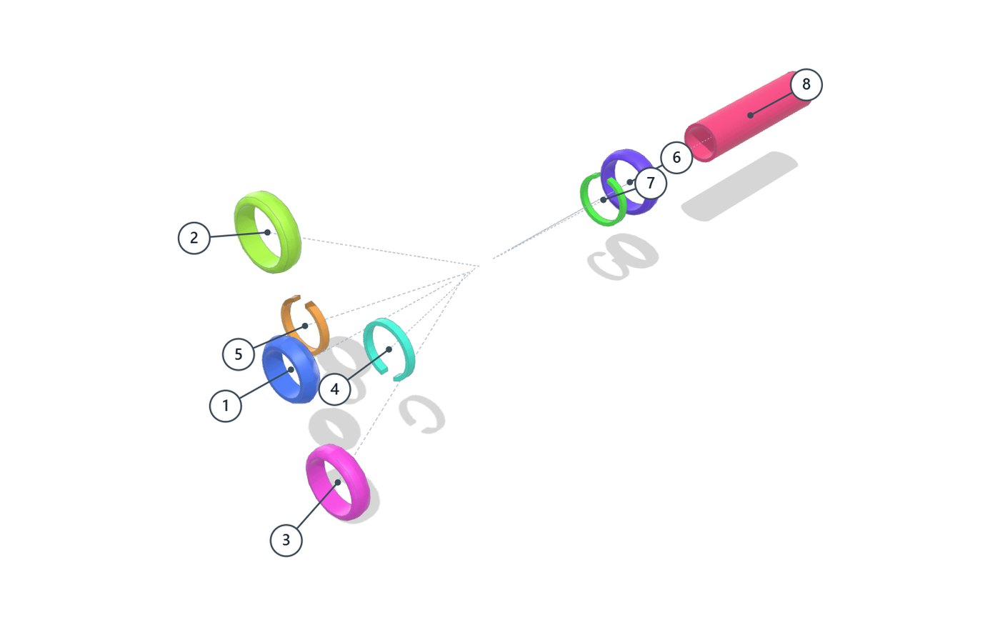

Master's researchRecherche de maîtriseUQAR · 2024 – 2026
LLM-generated exploded views of CAD assemblies, made reliable by a geometric verifierVues éclatées d'assemblages CAO générées par LLM, rendues fiables par un vérificateur géométrique
Designers still draw exploded views by hand. I generated training data, fine-tuned an LLM to propose the views, evaluated it on real assemblies, and built the verifier that catches what the model gets wrong.
Les concepteurs dessinent encore les vues éclatées à la main. J'ai généré les données d'entraînement, entraîné un LLM à proposer les vues, évalué ce modèle sur des assemblages réels, et construit le vérificateur qui détecte ses erreurs.
- Fine-tuned Qwen2.5-1.5B (LoRA) on 6,000 generated examples: invalid outputs 15.3% → 0%, median error 191.6 → 2.8 mm.
- Fine-tuning de Qwen2.5-1.5B (LoRA) sur 6 000 exemples générés : sorties invalides 15,3 % → 0 %, erreur médiane 191,6 → 2,8 mm.
- Python pipeline over 1,895 real assemblies; 3 LLM setups evaluated on 750 cases: 25–70% of well-formed outputs were physically wrong ("geometric hallucination").
- Pipeline Python sur 1 895 assemblages réels ; 3 configurations de LLM évaluées sur 750 cas : 25 à 70 % des sorties bien formées étaient physiquement fausses (« hallucination géométrique »).
- At equal budget, a simple baseline matched the LLM (51/51 vs 42–44; McNemar, Holm, bootstrap, 10 seeds).
- À budget égal, une méthode simple égale le LLM (51/51 contre 42 à 44 ; McNemar, Holm, bootstrap, 10 graines).
- Tool-calling LLM agent picks the right tool in 100% of 80 test cases, vs 32.5% for rules.
- Agent LLM à appels d'outils : bon outil dans 100 % des 80 cas testés, contre 32,5 % pour des règles.
Python · PyTorch · LoRA · OpenCASCADE · FastAPI · three.js · NVIDIA NIM